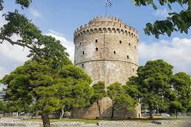
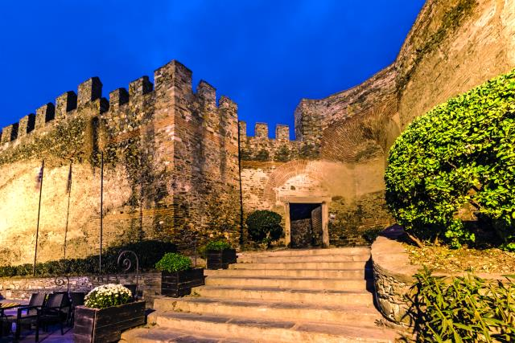

H Ροτόντα είναι θολωτό κυκλικό κτίσμα του 4ου αιώνα στη Θεσσαλονίκη, παρόμοιο με το Πάνθεον της Ρώμης. Η αρχική χρήση του δεν είναι γνωστή αλλά διατυπώθηκαν ως τώρα διάφορες υποθέσεις: ότι υπήρξε ναός του Διός, ή των Καβείρων, ότι κατασκευάστηκε από τον Καίσαρα Γαλέριο ως μαυσωλείο του, ή ως αίθουσα του θρόνου στο ανακτορικό συγκρότημα. Λόγω της μη χρήσης του, μετατράπηκε επί βυζαντίου σε χριστιανικό ναό των Ασωμάτων Δυνάμεων και μετά την Απελευθέρωση της Θεσσαλονίκης, το 1912, αφιερώθηκε στον Άγιο Γεώργιο. Συμπεριλαμβάνεται στα Παλαιοχριστιανικά και Βυζαντινά μνημεία της Θεσσαλονίκης ως Μνημείο Παγκόσμιας Κληρονομιάς της UNESCO.

Ο Λευκός Πύργος, το μνημείο - σύμβολο της Θεσσαλονίκης, που σήμερα υψώνεται μοναχικός στην παραλία της πόλης, στο παρελθόν αποτελούσε το νοτιοανατολικό πύργο της οχύρωσής της. Πρόκειται για το πιο γνωστό κάστρο της Ελλάδας και το σύμβολο της Θεσσαλονίκης. Στη μακρά ιστορία του, ο πύργος έχει αλλάξει κατά καιρούς ονόματα και χρήσεις.

Τα Κάστρα της Θεσσαλονίκης είναι ένα σύμπλεγμα τειχών, πύργων και οχυρώσεων με μοναδική αρχαιολογική, αρχιτεκτονική και ιστορική σημασία.Αυτό που λέμε σήμερα "Κάστρα της Θεσσαλονίκης" είναι μέρος μόνο της παλιάς οχύρωσης. Στην αρχική τους μορφή, τα τείχη και τα κάστρα της Θεσσαλονίκης περιέβαλλαν ολόκληρη την πόλη, συμπεριλαμβανομένης της πλευράς που βρέχεται από τη θάλασσα.Η σχεδίαση και η τεχνολογία των τειχών τα κάνει να μοιάζουν πολύ με τα βυζαντινά τείχη της Κωνσταντινούπολης, αν και βέβαια το μέγεθος διαφέρει.